Live App Screenshots
WHOOP in Taqa — every screen
All screenshots are from the live production app with real WHOOP data.
Home Feed & TAQA Scores — WHOOP as primary data source
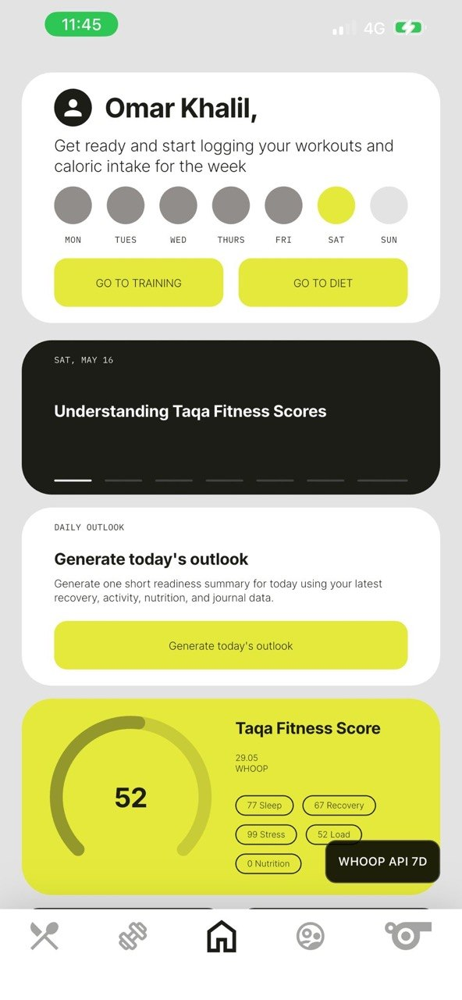
Home Feed
Daily TAQA Score with WHOOP connected as the data source. Score card shows Sleep, Recovery, Stress & Load subscores.
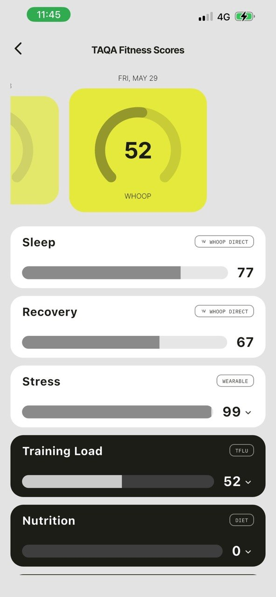
TAQA Fitness Scores
Sleep (77) and Recovery (67) scores using WHOOP as the data source for this user — the app shows which device each score comes from.
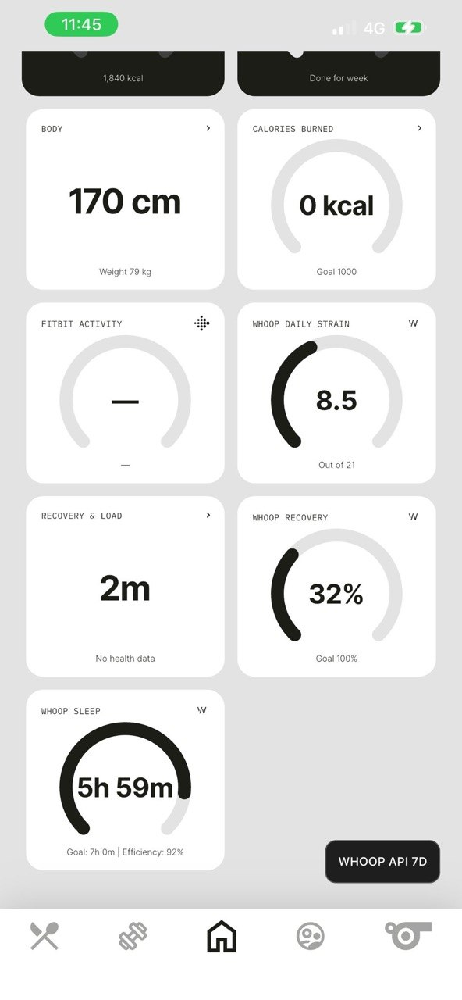
Dashboard Widgets
WHOOP Daily Strain (8.5/21) and WHOOP Recovery (32%) shown as native widgets alongside other trackers.
Recovery Screen — HRV, Resting HR, SpO₂, Skin Temp
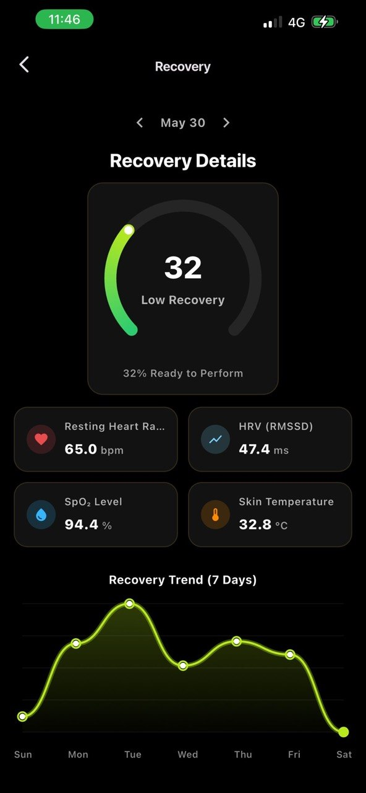
Recovery Details
Score 32 (Low Recovery). RHR 65 bpm · HRV 47.4 ms · SpO₂ 94.4% · Skin Temp 32.8°C with 7-day trend.
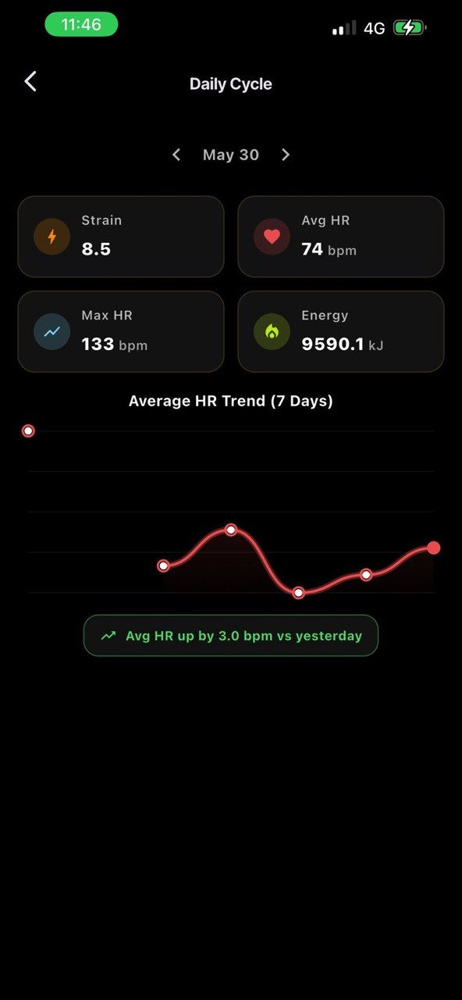
Daily Cycle
Strain 8.5 · Avg HR 74 bpm · Max HR 133 bpm · Energy 9590 kJ. 7-day avg HR trend chart.
Sleep Tracking — Weekly / Monthly / Yearly trends + Stage breakdown
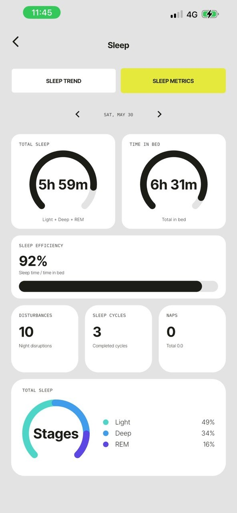
Sleep Metrics
Total sleep 5h 59m · Time in bed 6h 31m · Efficiency 92% · Stages: Light 49%, Deep 34%, REM 16%.
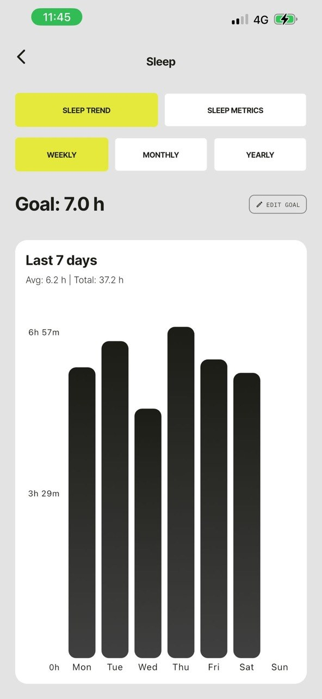
Sleep — Weekly Trend
Last 7 days avg 6.2h bar chart. Goal tracking at 7.0h.
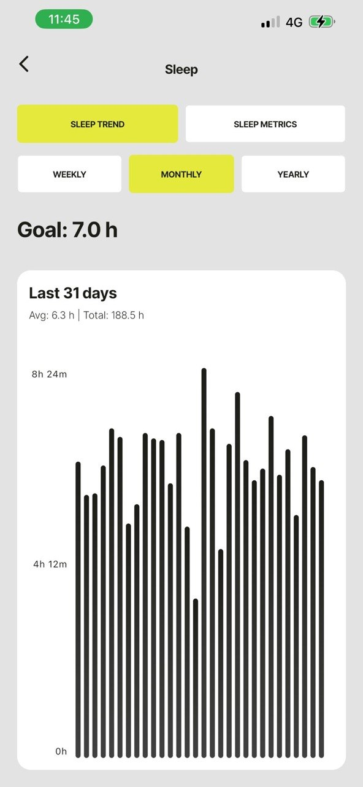
Sleep — Monthly Trend
31-day history, avg 6.3h / 188.5h total.
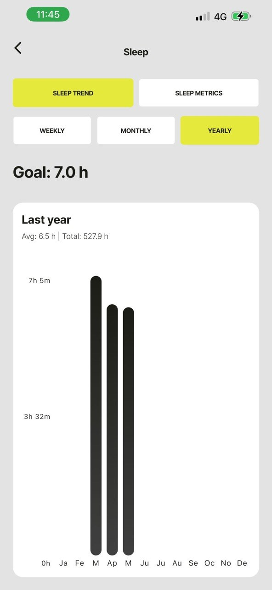
Sleep — Yearly Trend
Annual aggregation, avg 6.5h / 527.9h total.
Coach View — Client's WHOOP data visible to their assigned coach
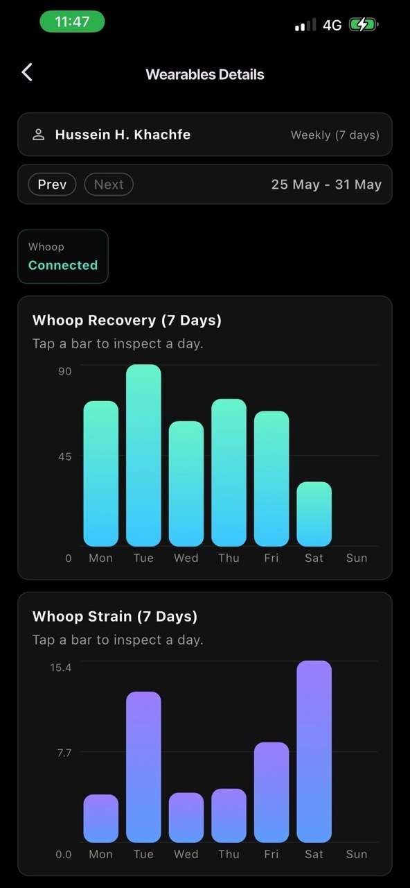
Coach — Wearables Details
7-day WHOOP Recovery & Strain bar charts. "Whoop Connected" badge visible to coach.
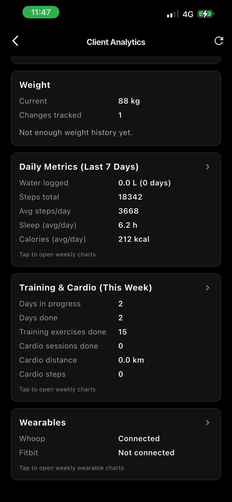
Coach — Client Analytics
Wearables section shows Whoop: Connected. Coach sees daily metrics alongside training and diet data.

Settings — Connect WHOOP
User-initiated OAuth flow. "Connect Whoop" and "Connect Fitbit" live under Devices section.